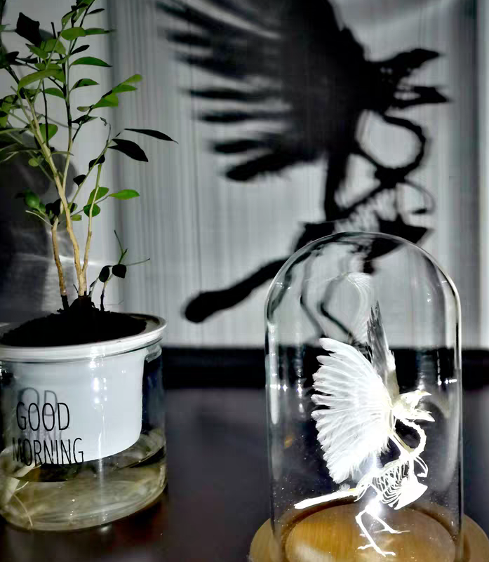

第四版
第四版

我的父亲和父亲的父亲，他们对我都有一些独特的教育。
今天中午父亲突然告诉我，让我晚上和他一起去给我爷爷烧纸。
爷爷在我未出生时便已去世了，所以也没有什么感情，最多是不大和那个年纪的老头交流。
每年，过年前都会给爷爷烧纸，并且拿出爷爷的遗像，祭拜爷爷。
我没回应，因为不太想和父亲交流，尤其是，单独和他出去时，每次都要拿出他的陈年往事，最后话题也都是引向无味的教育。况且，这些陈芝麻烂谷子的事，每次都说，都说烂了。
父亲总会在他看到、想到的任何时候说出那些他认为对教育我们有用的话。每次看到我们在充着电玩手机，他总是将他那些充电手机爆炸伤人的视频硬给我们看，之后甚至不要让我玩手机。但是，之后自己充电玩时，又仿佛视作无物。每次我们吃零食时，又要加一句整天吃垃圾食品。可他说了多次的戒烟，先是变为了以后不在家里抽，再后来变为了不在有人的客厅抽。可是现在只是一句句空话。现在，我也只成了听着就行。
最后还是拗不过拿出孝顺大义的父亲。
于是，出发。路上，我带着耳机和父亲走在昏黄的路灯下。
果然，又说到了爷爷，只不过这次都是没听他说过的内容。
你爷以前经常感冒，之后有一次，你奶不在家。就让刚做了几天活儿的你大姑，去给开药。村里的诊所，有时可以赊账，但是那次最后还没开成。还是第二天你奶回来给开的药。村里以前都有信用社，可以贷款，贷200只给你150，剩下50是信用金，要是你之后一年还上了，就把这50给你了。后来，你爷死了之后，要不是别人说还都不知道还欠钱着，然后你奶才赶紧让我把钱给人家还上。
你爷，以前还在村里当的队长，啥都做过，在工厂干过，给人家搬过货，养过蜂，种过西瓜，还有咱屋当时那一片猕猴桃地，还和别人开过水泥厂，当时开水泥厂还是和你堂姐他姑伯他丈人还有咱隔壁队的个人，四个人合伙开的。当时干的这些生意都赔了，就光跟别人开水泥厂的时候挣了一点钱，但是也就只把之前赔的烂账还上。然后你爷还养过蜂，当时邓小平上台，才把地分了。你爷借了两千块钱，跑到隔壁县去养蜂了。当时人也没养过，没有经验，然后养的蜂全得病死了。把钱也都赔完了。
咱屋人也都是老实人，确实不会做生意。
不知不觉，就到了地方，在这个废弃的丁字路口这里烧纸。来到这，已经有一处人烧过了。地上留着，燃烧的蜡烛，插的香，还有烧过的灰。
我们也开始烧，我父亲，边拿起纸，边叫喊我爷爷，我也往里烧纸。看着一团团的火焰，想起了当时小时候烧火的儿时，想起了爷爷对父亲的教育，想起了父亲对我的教育，仿佛也看到父祖辈那段燃烧的岁月……
父亲说，现在想起我爸了，每次想我爸的时候都想哭……
你妈当时挣钱，也辛苦很，在他屋就辛苦，在咱屋也辛苦。当时，我就是太懒了。咱屋就你妈最辛苦了，你奶也是，虽然不挣钱，但是那家务事都是你奶管的。你妈当时在长安县做活儿。你妈在她屋，就爱吃零食。然后也经常去买个零食。你妈不爱化妆，也是一直没有这习惯，成天在地里干活，哪有这时间和习惯。当时，你妈年轻的时候，拿命挣钱呢。当时晚上和你姑他们贩菜，凌晨两点多去跟你姑夫去拉菜。当时，那小卡车，回来的时候你妈就躺倒高高的菜上，危险很。然后，等七八点再回来，就顺便去那陕师大里面打扫卫生，一天干两份活。趁没啥人的时候再偷偷睡会。唉，劳人很。
我抬着头，看着晕黄的路灯，耳边传来父亲的声音，越来越久远，仿佛触摸到那个年代……
我想教育从来不是简单的说教，而是事实与行动。就像自己从来不想听说教。
自我教育才是真正的教育。
前些天，一个河南的同学突然告诉我，他个高中同学在大学中自杀了。同学说和他没什么交集，不过在学校听过他几次演讲。他们高中已经是全省的强校了，而他更是在学校最好的实验班，是清北之星。可是高考失利，去了湖南大学。并且就在这4月的前几天跳河自杀，只留下了一纸遗书。
我听闻后深感震撼，甚至身体有些颤栗。这种常听说的大学生自杀事件再次发生了。并且这次让我最为触动，我看了他的遗书，自小外婆照顾，父母离异，外地上学被霸凌，因家境和长相而自卑，暴躁乖张，自我鄙视。在高中考进实验班后戴上了面具，隐藏了胆怯懦弱，孤僻寡言。可是社交情感上的选择与遭遇使他辛苦拾起的自信碾成齑粉。言语中充斥着自己为渣滓、人渣之词。哪怕之后生命中照入了一束阳光，仿佛近来了光明，可却因自己的心理和其他各种因素一次次推远，最终须臾而逝。癫狂、焦虑、愤怒、无奈、痛苦、麻木以至于最后的湮灭。他受到的教育，他接触到的，以至于他的自我教育。最后都毫无作用。
到这儿，想起了我自己，从小学时被班主任骂作 老油条，混子，骂了五年半。自此心里也种下了那颗自卑怯懦的种子，直到初三学习仿佛好了起来。受到了老师的认可与表扬，高中没有进入最烂的高中。自此也有了仿佛自信的外壳。只是从这以后总是谨慎的看着别人的想法和对自己看法。我想我那位小学班主任做梦也想不到我会上一个211大学吧。可是到了大学又全面崩塌，学习、社交、感情，体会到了快被遗忘的感受。
我有时候想我要是有他的学习那样好，我还有什么可忧虑的。可是，也许每个人都有不同的困难。某些时候，我们对感受的理解不同，并不是你或我有错，仅仅是因为，你不是我。我很庆幸我有完美的家庭，有着还算全面而健康的教育，有着自我教育的能力。
朝生暮死，不负遇见，心中永远有一个小心愿。
我们都会健康的教育与被教育。